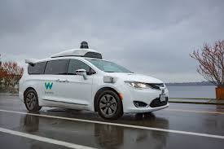

Level-4 autonomous vehicles are often referred to as "mind-off" vehicles. They are capable of traveling even without the presence of a diver. However, full self driving feature of level-4 autonomous vehicles can only be activated safe geo-fenced areas or traffic jams. The best example of a level 4 vehicle is Google's Waymo project. Waymo vehicles have been operating driver free for some time in the US, although a test driver is on hand just in case anything goes wrong.
Features in level-4 autonomous vehicles invlude:
The full self-driving mode enables drivers to safely use their mobile phones or engage in activities such as reading books. The vehicle would be capable to self driving with almost no intervention needed from the driver.